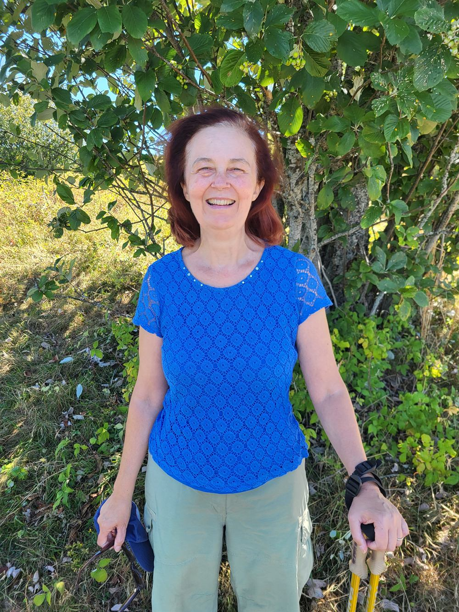
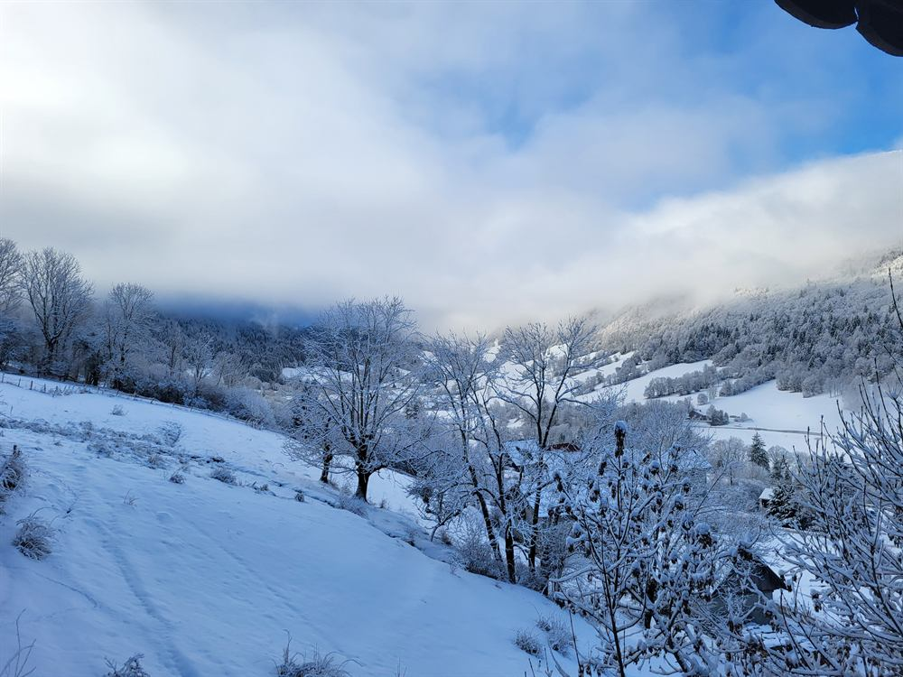

Les stages collectifs
Explorer une thématique en petit groupe, en associant marche dans les Bauges, expériences et ateliers de développement personnel.

Accueil · Qui suis-je ?
Accompagner les chemins de vie... et oser suivre le sien.
Odile Bernhardt, accompagnatrice des transitions de vie. Coach professionnelle, formatrice et praticienne en approches énergétiques, installée dans le massif des Bauges.

Ce qui me passionne, c'est d'aller explorer ce qui se joue réellement pour une personne : comprendre sa situation, ce qu'elle a déjà tenté, ce qui semble la freiner. Et surtout aller regarder ailleurs, là où elle n'a pas encore pensé à chercher.
J'aime ce moment où la personne s'exclame :
« Mais oui, c'est exactement ça ! »
Ce déclic peut ouvrir des perspectives jusque-là invisibles. Mais comprendre est une étape : décider et agir permettent de poursuivre son chemin.
Mon parcours s'est d'abord construit dans le monde de l'entreprise. Comme formatrice et coach professionnelle, j'ai accompagné des managers, des dirigeants, des équipes et des professionnels de l'accompagnement dans leurs évolutions et leurs défis.
Cette expérience m'a appris une chose essentielle : derrière une difficulté, une hésitation ou une résistance, il existe souvent des besoins, des peurs, des ressources ou des contradictions qui méritent d'être explorés.
J'ai progressivement enrichi ma pratique de différentes approches :
Mais les méthodes ne sont jamais une fin en soi. Ce qui m'intéresse, c'est la personne qui est en face de moi, ce qu'elle traverse et les chemins qu'elle peut découvrir pour avancer.

Avec mon mari, nous avons longtemps rêvé de vivre à la montagne. Pendant des années, nous y sommes venus en vacances, souvent en camping, avec ce sentiment de retrouver quelque chose d'essentiel : les grands espaces, le rythme de la nature, la simplicité de la vie.
Mais entre rêver et décider, il y a parfois un long chemin. Quitter la région parisienne, s'éloigner de notre famille, réinventer notre quotidien... Puis une évidence s'est imposée : pourquoi attendre la retraite pour vivre ce qui nous tenait tant à cœur ? Nous nous sommes installés dans le massif des Bauges.
Associer la marche en montagne et le développement personnel, j'en rêvais aussi depuis longtemps. J'avais déjà tenté l'aventure dans des gîtes de montagne, sans que les choses se passent comme je l'espérais. L'envie, elle, ne m'a jamais quittée.
L’Élan des Cimes est né de cette rencontre entre mon métier, mon amour de la montagne et un rêve qui attendait de prendre toute sa place. Après tant d'années à accompagner les projets des autres, je suis heureuse de donner vie à l'un des miens.
Mes idées prennent souvent forme lorsque je marche. C'est d'ailleurs ainsi que je conçois mes stages.
Une question que j'aimerais explorer avec les participants.
Au fil de mes pas, je construis le fil conducteur, les étapes, les exercices et leur enchaînement. J'imagine les questions qui pourraient émerger.
Un chemin qui bifurque, un arbre isolé, un champ de fleurs, un panorama qui s'ouvre : le point de départ d'un exercice ou d'une question.
La nature m'inspire. La marche met mes idées en mouvement. C'est cette expérience que j'ai envie de partager.
Comprendre une situation ne suffit pas toujours à la faire évoluer : nous pouvons savoir ce qui nous freine sans parvenir à ressentir ou à agir autrement. C'est pourquoi je mobilise plusieurs dimensions de notre expérience.
Comprendre, clarifier et prendre du recul.
Accueillir les émotions, reconnaître les besoins et retrouver ce qui nous touche ou nous anime.
Écouter les sensations, expérimenter le mouvement et découvrir d'autres façons de se relier à soi.
Explorer nos valeurs, nos aspirations et ce qui donne du sens à notre existence.
Coaching, mises en situation, figurines, dessin, écriture, approches corporelles, pratiques énergétiques ou expériences en pleine nature : je cherche avant tout l'expérience juste, au bon moment, pour la personne ou le groupe que j'accompagne.
J'aime créer un espace où chacun peut se sentir en confiance pour être pleinement lui-même : déposer ce qui pèse, exprimer ses doutes et ses émotions, sans avoir à se justifier ni à donner une bonne image de soi.
Ma douceur ne m'empêche pas d'être confrontante. Je peux poser une question qui dérange un peu, pointer une contradiction ou vous inviter à questionner une certitude. Non pas pour vous pousser dans une direction, mais pour vous aider à découvrir celles que vous n'aviez pas encore envisagées.
La vie nous confronte à des événements sur lesquels nous n'avons pas toujours de prise. Mais il reste souvent un espace de liberté : celui de notre regard, de nos décisions et de nos actions. Distinguer ce qui dépend de nous, lâcher ce que nous ne pouvons maîtriser et concentrer notre énergie sur ce qui est possible : voilà une démarche qui me tient à cœur.
Je ne suis pas là pour vous dire quel chemin choisir. Je suis là pour vous aider à retrouver votre propre boussole.
Dans les deux cas, la même intention : un cadre attentif et stimulant pour prendre du recul, explorer vos possibilités et retrouver votre liberté de choisir.
Explorer une thématique en petit groupe, en associant marche dans les Bauges, expériences et ateliers de développement personnel.

Un accompagnement individuel, confidentiel et personnalisé, lorsque vous avez besoin d'un espace rien que pour vous.
Je ne crois pas qu'il existe un chemin idéal, valable pour tout le monde. Je crois aux chemins singuliers, à ceux que nous découvrons en avançant, et qu'il n'est jamais trop tard pour redonner une place à ce qui nous anime. Si vous ressentez le besoin de faire une pause, de questionner votre direction ou d'oser un nouveau chapitre, je serai heureuse de vous accompagner.
L’Élan des Cimes · Retrouver son élan, choisir son chemin.